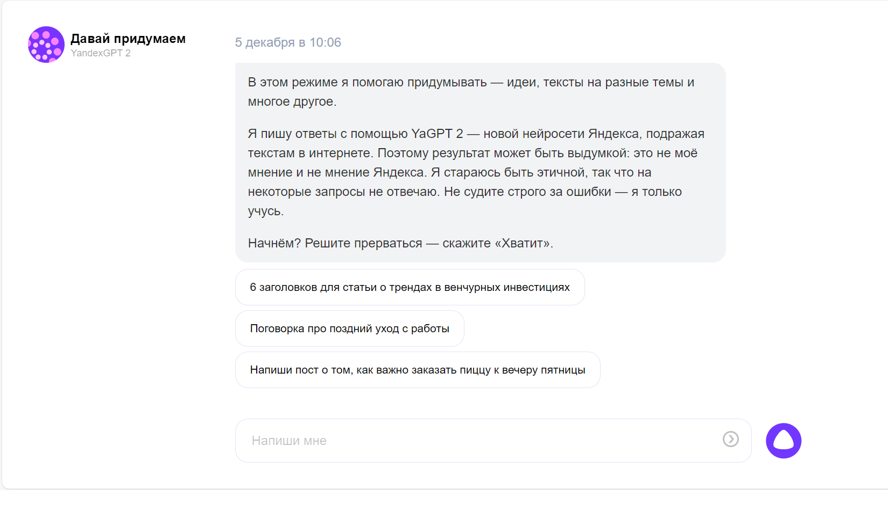

Добро пожаловать на наш увлекательный ресурс, посвященный фантастическому миру Искусственного Интеллекта (ИИ)! Что такое Искусственный Интеллект?
Искусственный интеллект представляет собой область информатики, занимающуюся созданием интеллектуальных агентов, способных анализировать окружающую среду, принимать решения и взаимодействовать с ней. На этой странице мы расскажем о том, как ИИ изменил наш мир и какие возможности он предоставляет. Основные понятия в Искусственном Интеллекте
ИИ-сервисы для генерации текста
AI-инструменты для создания текстов называют писателями с искусственным интеллектом. Не стоит ожидать, что они сгенерируют на 100% уникальный материал, но это будет качественная заготовка, которая сэкономит человеческим ресурсам массу времени. Среди лучших сервисов ИИ по написанию текстов можно назвать следующие.
Бот, который многие пользователи называют лучшим искусственным интеллектом. Разработка американской OpenAI, у истоков которой стоял Илон Маск. ChatGPT способен: сочинять стихи, песни, сценарии, писать статьи и научные работы, переводить текст с одного языка на другой, генерировать и проверять компьютерный код, давать советы и поддерживать беседу.
YandexGPT

Сервис для написания текстов и нейросеть от Яндекса. Она может создавать описания продуктов и услуг, искать информацию в интернете, общаться с пользователями.
Чтобы запустить YandexGPT, достаточно зайти на ya.ru, нажать на иконку Алисы в правом нижнем углу страницы и выбрать режим «Давай придумаем». Затем сформулировать запрос и немного подождать, пока искусственный интеллект его обработает.
Как рассказывают в самом Яндексе, чтобы нейросеть “впитала” максимум знаний о мире, её обучали в два этапа. Сначала показали электронные книги, сайты, статьи. Затем инженеры по машинному интеллекту дообучили её на сотнях тысяч примеров хорошо написанных ответов. Благодаря этому диалог с Алисой напоминает общение с живым человеком.
Бот, который многие пользователи называют лучшим искусственным интеллектом. Разработка американской OpenAI, у истоков которой стоял Илон Маск. ChatGPT способен: сочинять стихи, песни, сценарии, писать статьи и научные работы, переводить текст с одного языка на другой, генерировать и проверять компьютерный код, давать советы и поддерживать беседу. Что может предложить умный бот специалистам интернет-магазина? С помощью него можно подготовить: приветственное сообщение на сайте электронной коммерции, слоган для баннеров и рекламных объявлений, e-mail-рассылку покупателям, политику конфиденциальности и условия продажи, контент-план для аккаунтов в социальных сетях и сами посты, описание товара.
Искусственный Интеллект — это не только готовые решения, но и постоянное исследование и развитие. Мы рассмотрим актуальные тенденции в области ИИ, новые направления и вызовы, с которыми сталкиваются исследователи и разработчики. Зачем нам важен Искусственный Интеллект?
В завершение, мы ответим на вопрос о том, почему ИИ является ключевой технологией будущего. Узнаем, как он может помочь решить сложные проблемы и изменить мир к лучшему.
Присоединяйтесь к нам в этом захватывающем путешествии по миру Искусственного Интеллекта!